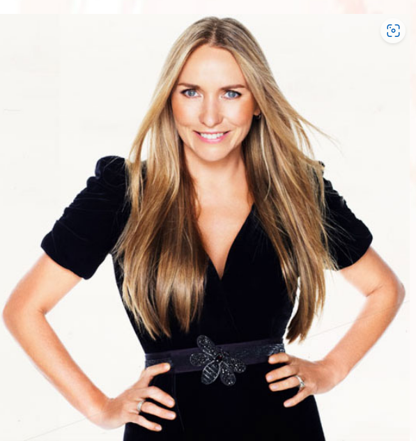

Welcome to ABOUT THE COMPANY !!!

Collette Dinnigan is one of the country’s most successful and celebrated fashion and interior designers. In
2017 Collette was awarded an Order of Australia, and was also the Special Guest Editor for Vogue Living’s
‘Italian’ issue.
Collette became the first Australian to mount a full-scale ready-to-wear collection in Paris in October
1995, and in 1996 was invited by the Chambre Syndicale de la Haute Couture to show on the prestigious Paris
Fashion Week schedule. In 2008, she was invited to join the esteemed executive board of the organization.
Collette was no overnight success. Hard work and passionate attention to detail have driven her to become
Australia’s most lauded designer. Her list of awards is long. She won Australian Designer of the Year in
1996, and, most notably, the Louis Vuitton’s Business Award in 1997. She received the Award for Excellence
from Fashion Group International in 1998. The same year she was appointed Chairperson of The New South Wales
Small Business Development Corporation, having previously participated as an advisor to the South Australian
Wool Board.
In July 2000, a selection of the Collette Dinnigan 2001 Autumn / Winter collection and her Resort 2001 range
were exhibited in the London’s Victoria & Albert Museum, for Fashion In Motion. The following year, she
teamed up with iconic UK retailer Marks & Spencer to launch well-priced lingerie called Wild Hearts.
In 2001 and 2003 she was voted one of Australia’s 50 Most Beautiful Exports. In Paris, in 2002, she was
honoured with the Leading Women Entrepreneurs of the World Award, and in 2004 she was presented with the
CLEO and Maybelline Celebrity Designer of the Year award. Then in 2005, her image was put on a stamp by
Australia Post as part of their Australian legends campaign and received further awards from Marie Claire
and Instyle the same year. In March 2008, Collette landed the National Retailers Association’s prestigious
Award for Fashion Excellence. The award donors individuals whose outstanding achievements and ongoing
commitment have made a significant contribution to the Australian Fashion Industry.
Her celebrity status was confirmed when in August 2006 Collette became a face of the American Express “My
Life. My Card” campaign, alongside Robert De Niro, Anthony La Paglia, Kate Winslet, and Venus Williams. The
following year she was honoured with Olivia Newton John at the G’DAY USA event in New York. It was said by
the Australian Consular General, the Hon. John Olsen: “We are thrilled to have two great Australian icons.
Their undeniable talents and achievements are an inspiration to us all.”
Collette is a designer who supports her creativity with a sharp sense of reality which is why in 2008 she
worked with Target to deliver Wild Hearts to Australian consumers though the retailer’s stores. Her Bridal
Collection has been stocked internationally to retailers including Barneys New York and Browns in London.
Collette has designed the wedding dresses for brides, including Tony Collette, Miranda Kerr and Sarah
Murdoch. During 2010, Collette Dinnigan launched her new Collette By Collette Dinnigan lingerie range into
Marks and Spencer in London.
In 2012, the NSW Government honored Collette with the Australian Fashion Laureate Award, recognising her
outstanding creative and intellectual achievement in the Australian Fashion Industry. Her first book,
Obsessive Creative, was published in 2013 to great success.
While her aesthetic essence is undeniably Australian, Collette’s sensibilities translate easily around the
world. Every garment was carefully hand-made and then shipped to stores in a variety of destinations around
the globe, including Asia, Europe, Middle East, United Kingdom and the United States.
At the beginning of 2015, Miele Australia appointed Collette Dinnigan as brand ambassador. Her collaboration
began with Miele’s Laundry Care collection which highlighted the advancements of laundry technology,
enabling the same level of care as dry cleaning on delicate garments, but from the comfort of consumers’
On September 2nd, 2015, the Honorable Julie Bishop opened Collette’s retrospective exhibition, Collette
Dinnigan: Unlaced, at the Museum of Applied Arts and Sciences, Powerhouse Museum. Collette Dinnigan is the
first designer exhibition to be shown at the Museum’s Centre for Fashion. The exhibition explores Collette’s
creative process and the romantic, feminine designs that have seen her work sought after by a star-studded
clientele of international actresses and royalty. Her work has appeared in movies and television and is worn
by fashion icons worldwide including Princess Mary of Denmark, the Duchess of Cambridge, Nicole Kidman,
Angelina Jolie, Beyoncé and many more notable influencers.
In October 2015, Collette disrupted the retail industry releasing a limited edition, affordable
childrenswear range Young Hearts for German retailer Aldi. Following its popularity, Collette developed her
second and final Aldi Summer Young Hearts range in 2016, introducing clothing for young boys. The
collaboration was described by Retail Doctor Group’s Brian Walker as “one of the most brilliant tactical
promotional activities seen in the past few years”.
Collette has many successful and ongoing collaborations with luxury brands and companies such as Qantas,
Audi, Specsavers and Dom Perignon. In recent times, Collette has turned her eye for design, lending her
aesthetic to a number of interior collaborations and special projects including new Sydney residential
development, Golf House Surry Hills with architect Peter Israel, designing luxury penthouse suites at
Bannisters by the Sea Mollymook, an exclusive wallpaper range for Porter’s Paints, a range of designer
optical and sunglasses for Specsavers and a new linen collection with homewares specialist, Linen House.